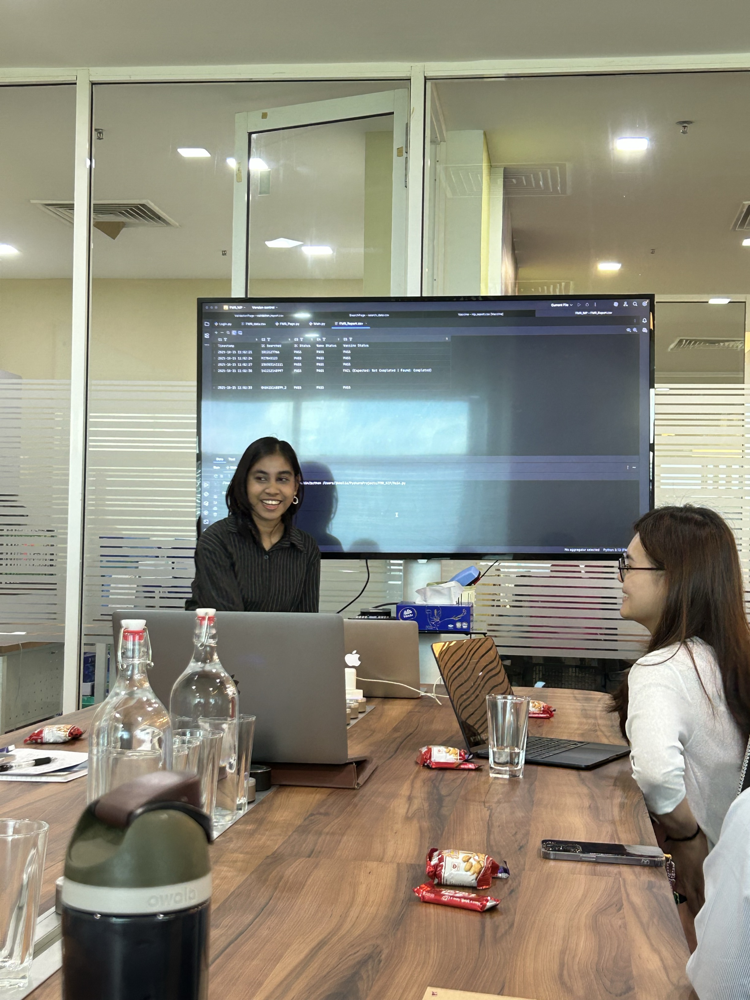
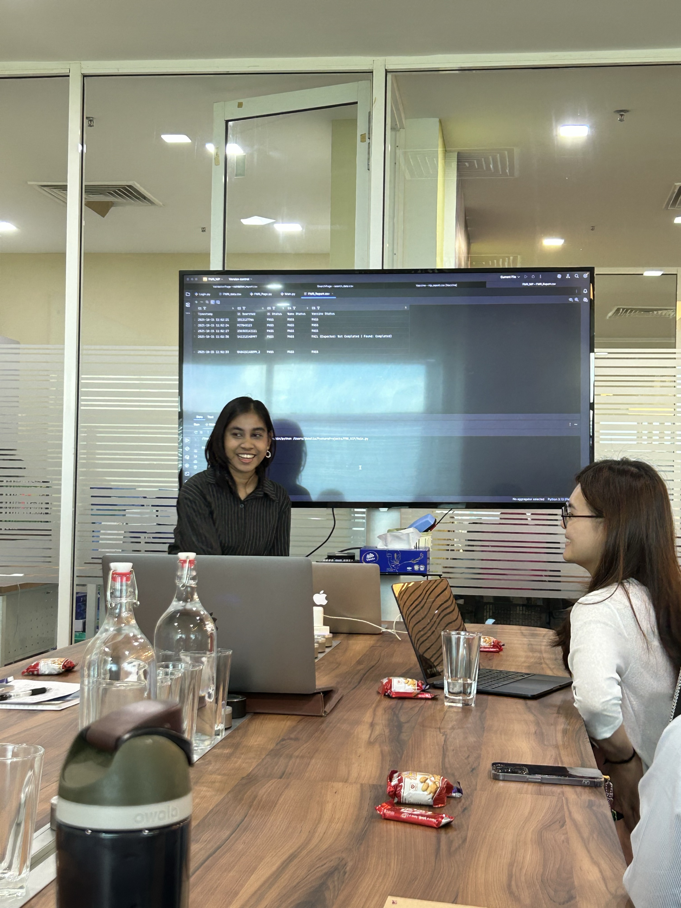
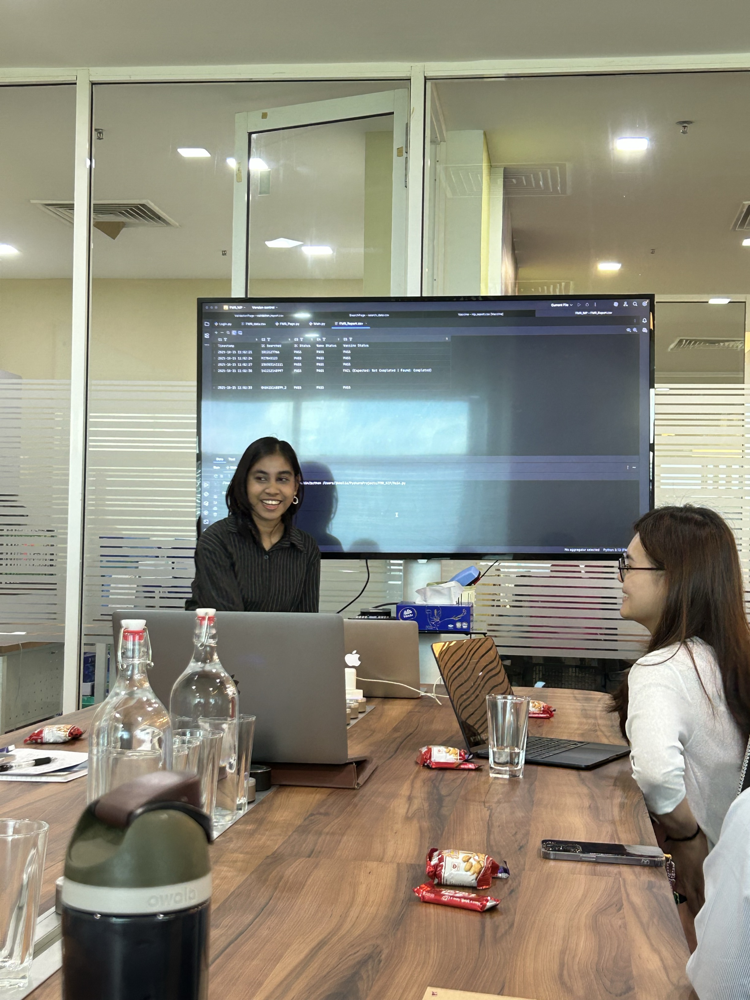

Python Selenium & Webdriver Automation
During my internship at Entomo Digital Sdn. Bhd., I worked on an automation project for the MyVAS system, focusing on testing under the NIP module. The goal was to create automation scripts that would help test different functions and ensure smooth system performance.
This automation project focused on the NIP module of the MyVAS system. I implemented automation scripts using Selenium to simulate user interactions, detect functional issues, and improve testing efficiency, ensuring consistent quality and performance.
The four scenarios I implemented for testing the NIP module are:
The video below showcases my Mini Project, which includes demos for all four testing scenarios. Before diving into the mini project, I want to sneak in my experience during the internship at Entomo Digital Sdn. Bhd.:
